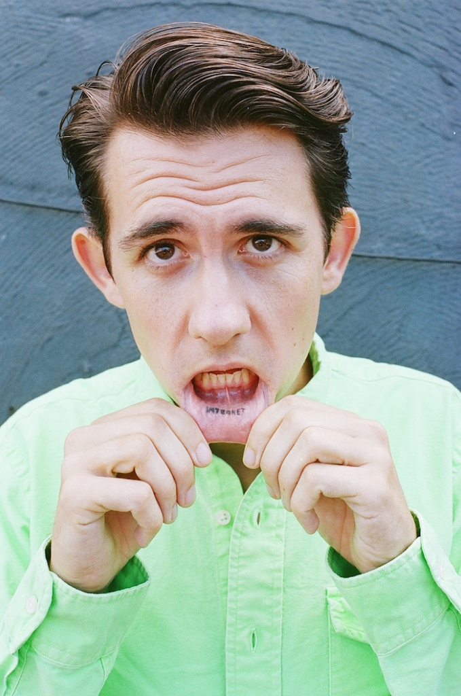

“ The experience that you have when you are at home using Abstract Browsing on your computer is as authentic as viewing one of the tapestries in a gallery. From my point of view: the Internet is like a waterfall, an exhibition more like an aquarium.
Rafaël Rozendaal
Artist | Pioneer of Net Art | Founder of BYOB
- 1980, Amsterdam - lives and works in New York
- websites, installations, prints and writing
- earlier works focused on figurative art, but slowly moved towards abstract
- diverse works:
- from movement to abstraction
- from virtual to physical space
- from website to print
- fascinated with moving images and interactivity in its simplest form
- one of the first artists to sell websites as art objects
